RISE Seminar · September 24, 2026
Dr. Berhe Lab
Part I: Structured Queries (2020–2024) | Part II: LLM & Agentic Queries (2025–2026)
Chronological order of software updates
Relationships between software updates
Dependencies between software updates
— Users feedback, 2020
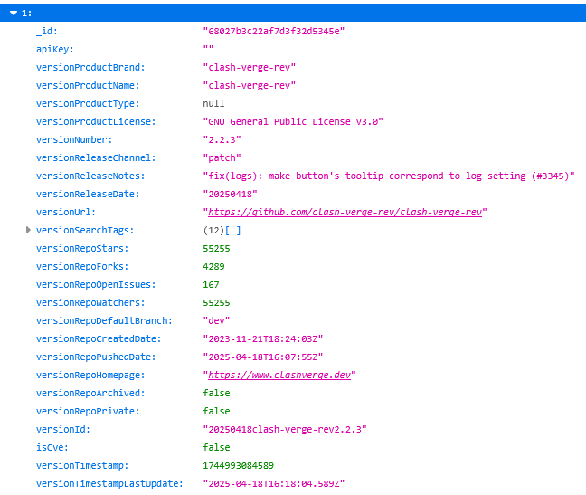
| Metric | Why |
|---|---|
| Recent updates | Helps track recent update bursts or regressions |
| Update type | Distinguishes patch (e.g., 1.2.3), minor (e.g., 1.2.0), and major (e.g., 1.0.0) updates |
| Count version | Measures churn and helps reduce risk of coinciding updates |
— Users feedback, 2020
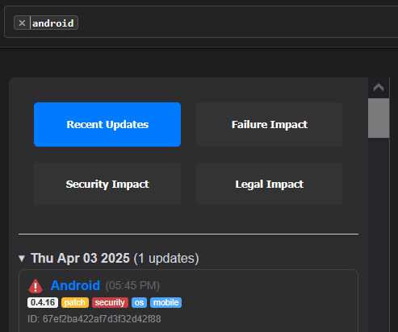
— User feedback, 2020
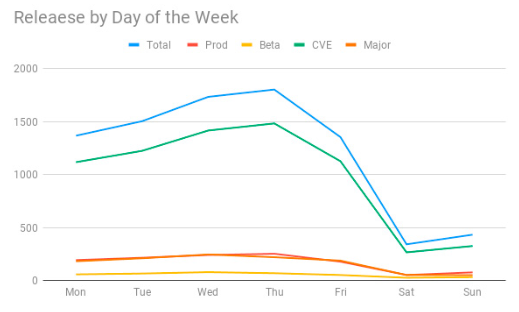
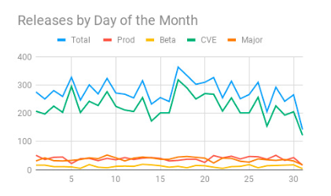
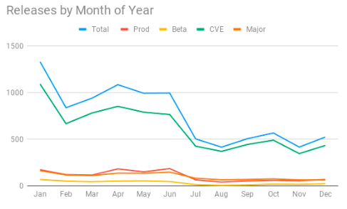
— Users feedback, 2023
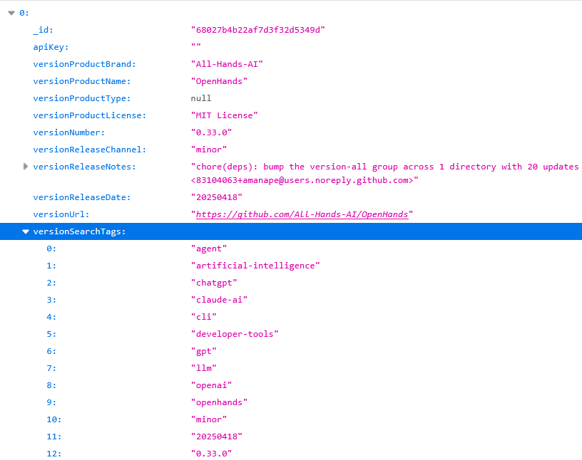
| Metric | Why |
|---|---|
| Recent updates | Helps track recent update bursts or regressions |
| Update type | Distinguishes patch (e.g., 1.2.3), minor (e.g., 1.2.0), and major (e.g., 1.0.0) updates |
| Count version | Measures churn and helps reduce risk of coinciding updates |
| Count edge | Measures dependency between components |
— Users feedback, 2023
— Triage team question, 2023
— Testing team planning, 2023
— Architect team planning, 2023
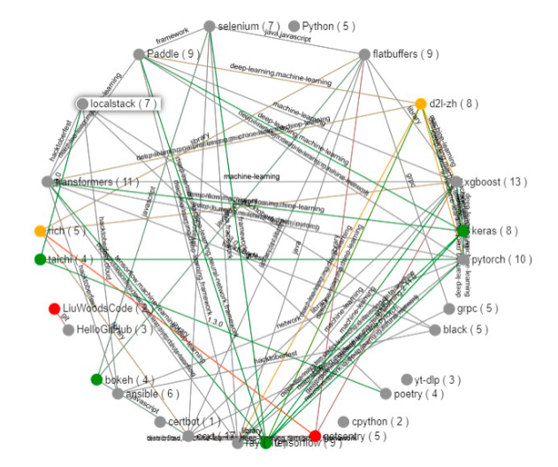
— Users feedback, 2024
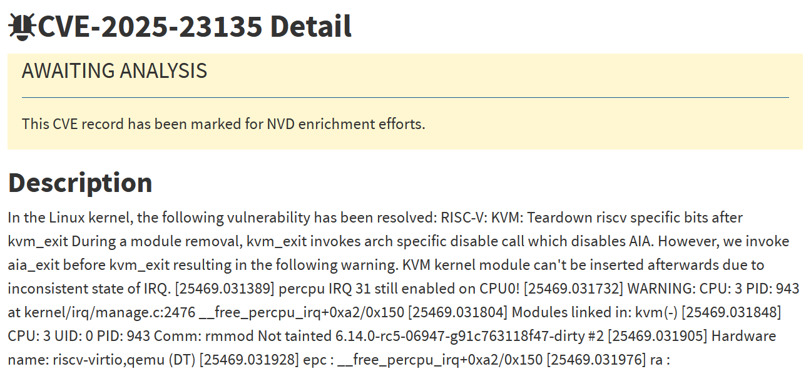
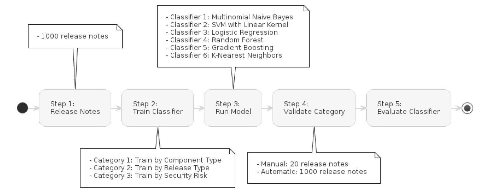
| Weighted Metric | Why |
|---|---|
| Recent updates | Helps track recent update bursts or regressions |
| Update type | Distinguishes patch (e.g., 1.2.3), minor (e.g., 1.2.0), and major (e.g., 1.0.0) updates |
| Count version | Measures churn and helps reduce risk of coinciding updates |
| Count edge | Measures dependency between components |
| Classify component | Measures churn and helps reduce risk of high impact component updates |
| Classify version | Measures churn and helps reduce risk of security / breaking updates |
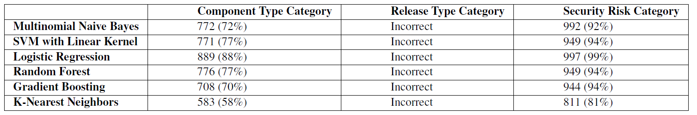
— Users feedback, 2023
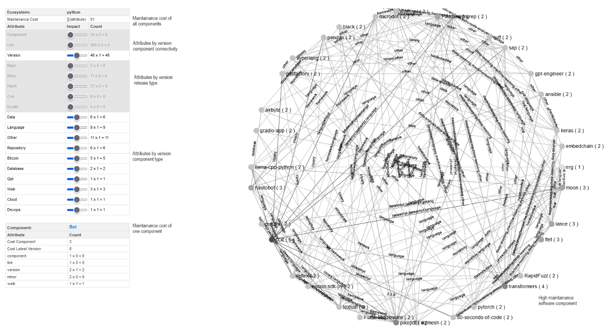
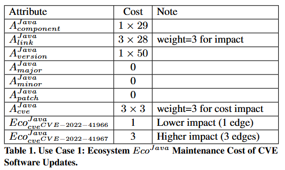
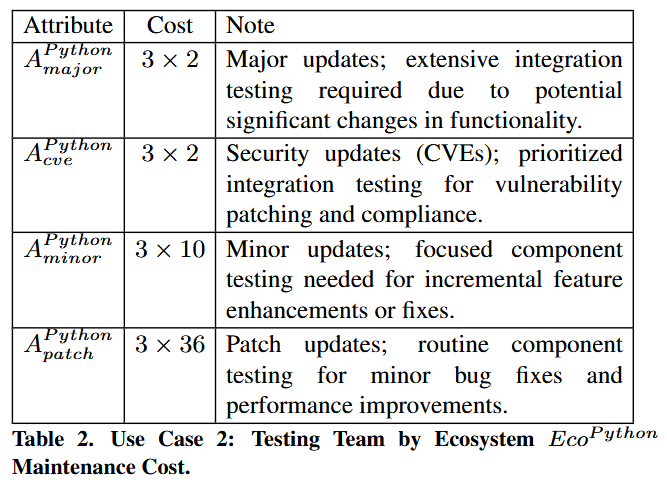
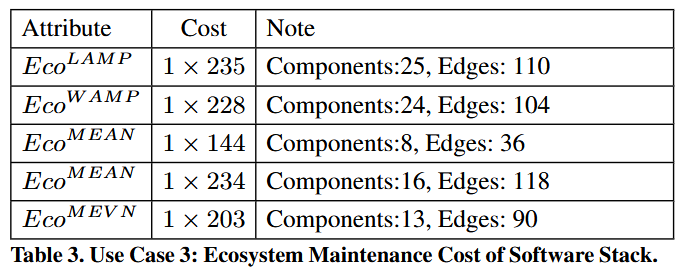
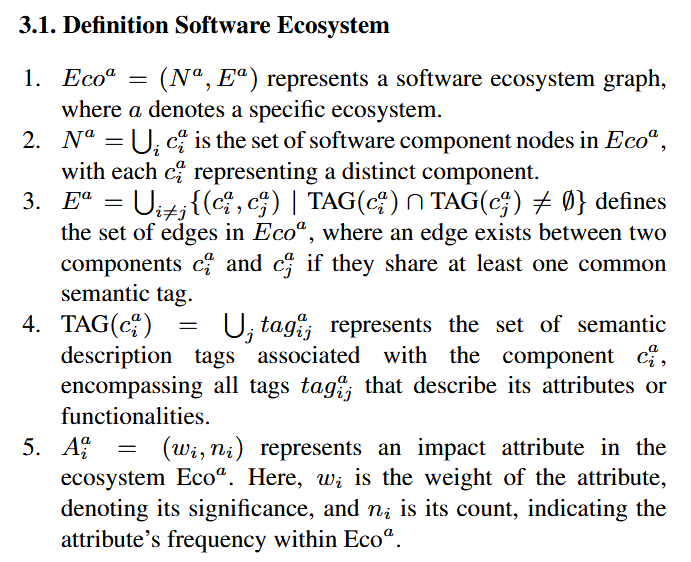
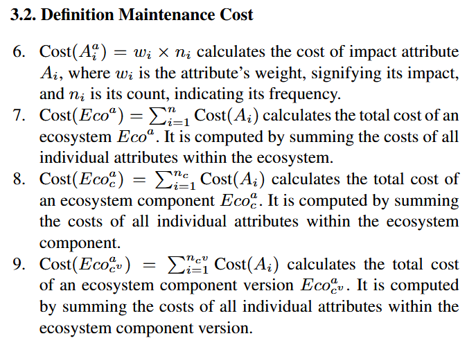
— Users feedback, 2024
breaking = [
"400", "401", "402", "403", "404", "405", "406", "407", "408", "409", "410", "411",
"412", "413", "414", "415", "416", "417", "418", "421", "422", "423", "424", "425",
"426", "428", "429", "431", "451", "500", "501", "502", "503", "504", "505", "506",
"507", "508", "510", "511", "broken", "breaking", "error", "exception", "privacy",
"legal", "terms", "conditions", "hipaa", "password", "bluetooth", "authentication",
"authorization", "compliance", "breach", "leak", "confidentiality", "integrity",
"availability", "audit", "gdpr", "ccpa", "sox", "pci", "performance", "slow", "wifi",
"restart", "sign in", "glitch", "weird", "slow to start", "won't load", "bluetooth not working",
"wifi issues", "can’t sign in", "system crash", "app keeps crashing", "login failed",
"update failed", "reset required", "freezing", "hanging", "not responsive"
]
| Weighted Metric | Why |
|---|---|
| Recent updates | Helps track recent update bursts or regressions |
| Update type | Distinguishes patch (e.g., 1.2.3), minor (e.g., 1.2.0), and major (e.g., 1.0.0) updates |
| Count version | Measures churn and helps reduce risk of coinciding updates |
| Count edge | Measures dependency between components |
| Classify component | Measures churn and helps reduce risk of high impact component updates |
| Classify version | Measures churn and helps reduce risk of security |
| Classify version | Measures churn and helps reduce risk of breaking updates |
— Users feedback, 2024
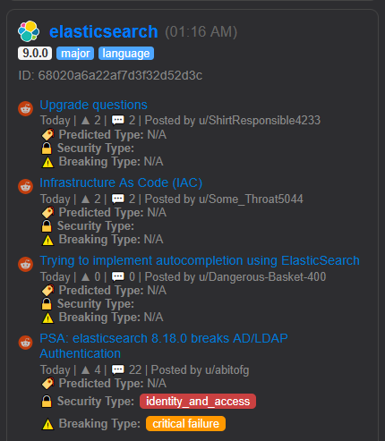
Enriched notes per component:
Most posts lacked version info; Android & Java were exceptions. OS posts (Jun–Jul 2024) were active;
Broader Categorization
Breaking Updates
Feedback Variation
Versioning Matches
iOS posts had the most version info.
Versioning Visibility
Tech Component Gaps
Frequent Issues
Concern Types
Increased Detection
Impact on Clinical Applications
— User question, 2025
— Architect question, 2025
1. Prioritize non-CVE items first
2. Sort by component type priority:
→ Move these to the top["os", "server", "language", "database", "browser"]
→ Push ["app", "ide", "github", "web", "repository", "design"] lower
3. Prefer fewer versionSearchTags if under 5
4. Prefer fewer componentType entries
5. Sort by breakingType severity: "Critical Failure" > "Limited Functionality" > "Breaking Update"
6. Prioritize "major" release channel
7. Prefer higher versionNumber: master > minor > patch
8. More Reddit posts = higher priority
9. More breakingType values = higher priority
10. Higher triage value = higher priority
— Architect question, 2025
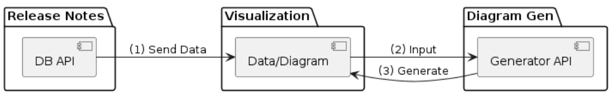
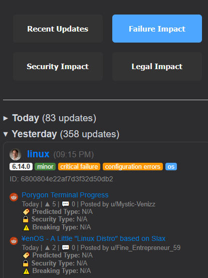
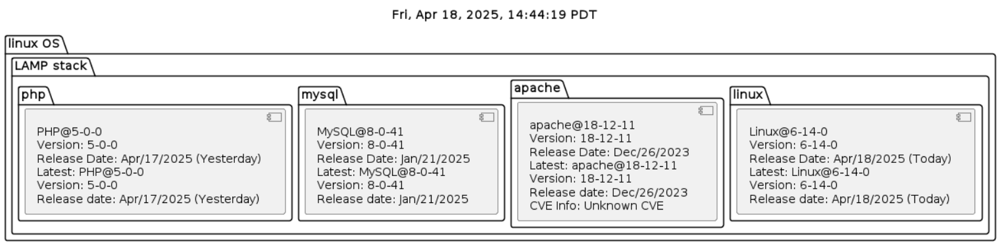
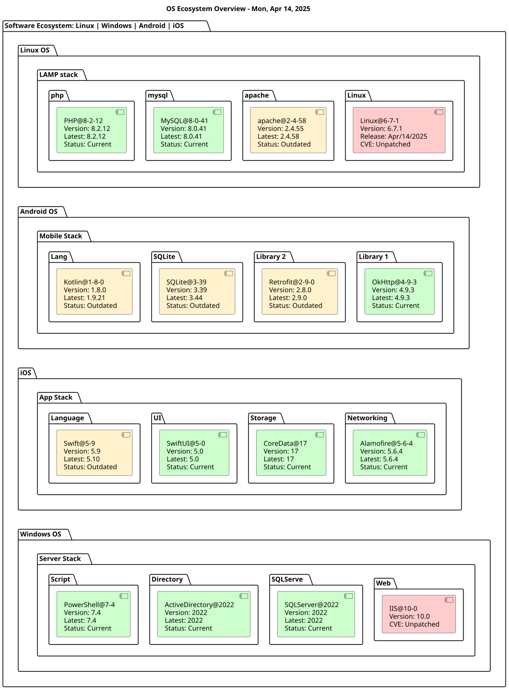
Prompt-based queries over the update data lake
Shaikh & Berhe (2026), A Hallucination-Resistant RAG System for Software Update Queries, EDI40 · OkIP CAIF (2026), RAG-Based Semantic Retrieval
Orchestrated, multi-agent queries
Pujari & Berhe (2026), An Adaptive Multi-Agent RAG Architecture for Software Ecosystem Update Monitoring, AgenticSE '26
— User question, 2025
— Research question, 2025
| Query Type | Total | Answered | Abstained | Hallucinated |
|---|---|---|---|---|
| Version | 10 | 6 | 1 | 0 |
| Patch | 5 | 6 | 1 | 0 |
| CVE | 5 | 4 | 2 | 0 |
| Overall | 20 | 16 | 4 | 0 |
Zero hallucinated outputs across all 20 evaluated queries · avg. response time ~3s
Version Query (NVIDIA)
User asks for the most recent driver version. Vendor is validated, release artifacts filtered by relevance and freshness.
Evidence-backed answer returned
CVE Query (Windows)
User asks whether a fix exists for a specific CVE. Advisories checked for consistency and recency.
Answers if confirmed, otherwise abstains
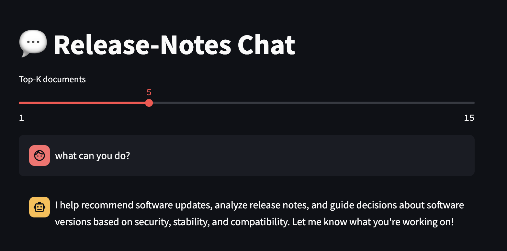
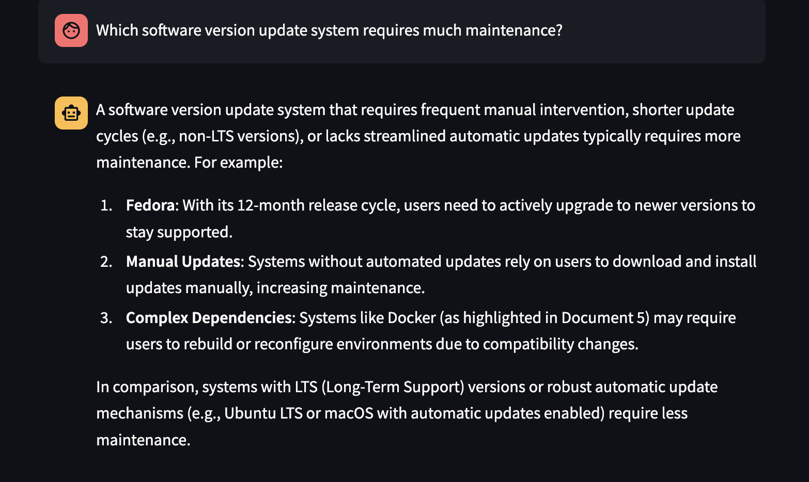
— Looking ahead, 2026
— Research question, 2026
| Category | 1-Agent | 4-Agent | Improvement |
|---|---|---|---|
| Security | 0.630 | 0.750 | +19.0% |
| Bugs | 0.756 | 0.833 | +10.3% |
| Releases | 0.667 | 0.723 | +8.5% |
| Community | 0.730 | 0.850 | +16.4% |
| General | 0.600 | 0.750 | +25.0% |
| Overall | 0.680 | 0.798 | +17.2% |
Paired t-test, 50 queries: t(49) = 2.32, p = 0.020 · zero hallucinated version-specific outputs
— Research question, 2026
"Are there known Siri issues following the iOS 26.4/26.4.1 updates?"
Single-Agent RAG
"Try updating Siri settings. The issue may have been fixed in a recent update."
Limited supporting evidence
Multi-Agent RAG
"iOS 26.4 introduced changes affecting Siri offline task execution. Multiple users report the same behavior following the update."
Grounded in retrieved sources
"Why did Firefox break after last night's update, and is it safe to roll back?"
Five lenses, one question, one integrated pipeline
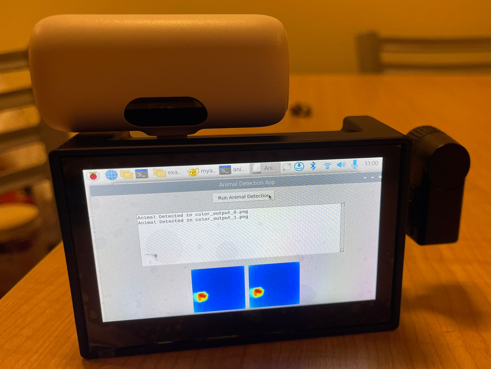
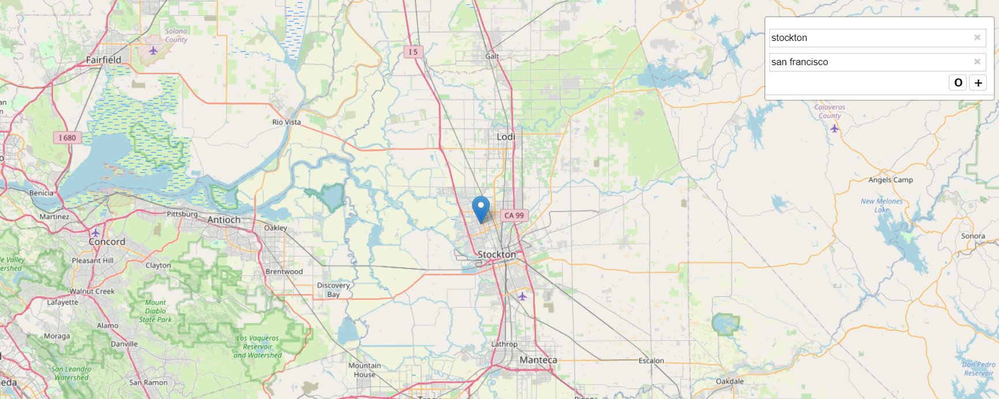
This work connects to a growing international research community on agentic software updates.
AgSU 2027 · International Workshop on Agentic
Software Updates
Co-located with ANT and EDI40 2027, Delft, the Netherlands